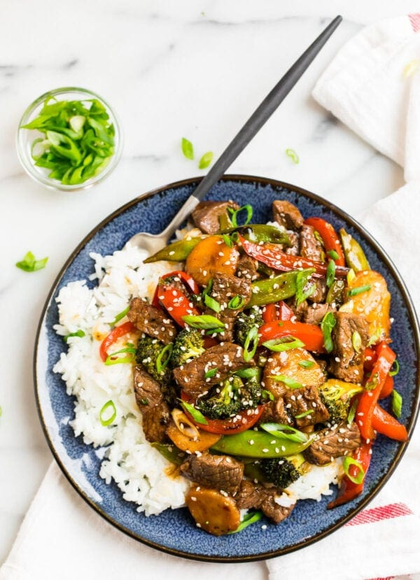

Teriyaki Beef Stir Fry Recipe

Recipe found here
Ingredients
- Sirloin steak
- Soy sauce and black pepper
- Vegetables
- Water chestnuts
- Green onions
- Teriyaki sauce
Directions
-
Marinade the beef in the soy sauce and black pepper.
Stir together the homemade teriyaki sauce.
-
Brown the beef in a large pan or wok until cooked through.
-
Saute your vegetables of choice until tender.
-
Combine! Add the water chestnuts, beef, and sauce
to the pan with the veggies. As the sauce thickens,
stir in part of the green onions.
Finish with a sprinkle of the sesame seeds and
remaining green onions.